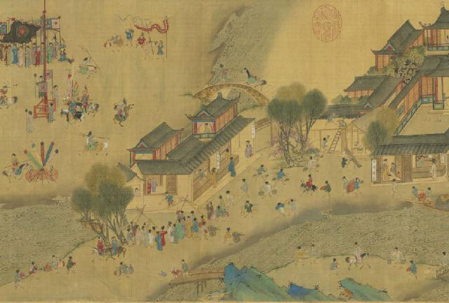
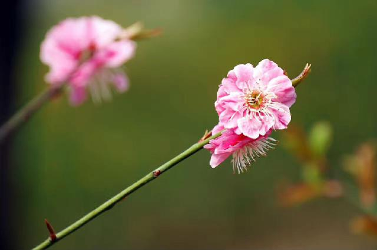

每年在农历三月初一前后（公历4月4-6日），太阳到达黄经15度时为清明节气，今年的清明时间是4月4日22点17分，农历丁酉年三月初八。
西汉时期的《淮南子·天文训》中说:“春分后十五日，斗指乙，则清明风至。”“清明风”即清爽明净之风。清明时节的物候特征是：“桐始华，田鼠化为鴽，虹始见，萍始生。”清明花信为：“一候桐花，二候麦花，三候柳花。”
二十四节气中，清明是唯一一个既是节气又是节日的日子。根据光绪年间成书的《燕京岁时记》所记载：“万物生长此时，皆清洁而明净。故谓之清明。”作为节日的清明在唐朝才形成，而作为时序标志的清明节气早已被古人所认识，汉代已有了明确的记载。唐代开始，寒食与清明并列放假，不同年号分别有四至七天的假期。宋代生活日趋都市化，民俗向娱乐方向发展。为了让人们能够在清明扫墓、踏青，太学放假三日，武学放假一日。《清明上河图》描绘的就是当时的图景。
后来，清明和寒食逐渐合而为一，清明将寒食节的祭祀习俗收归名下。同时，时间相近的上巳节习俗“上巳春嬉”也融入到清明节中。明清以后，上巳节和寒食节已基本退出了节日系统。清明节与其他传统节日不同，是融合了“节气”与“节俗”的综合节日，几乎是所有春季节日的综合与升华，清明节俗也具有更加丰富的文化内涵。
（一）扫墓：清明节是纪念祖先的节日，作为重要节日内容的祭祀、踏青等习俗主要来源于寒食节和上巳节。寒食禁火，冷食祭墓，清明取新火踏青出游。唐代之前，寒食与清明是两个前后相继但主题不同的节日，前者怀旧悼亡，后者求新护生。唐玄宗时，朝廷曾以政令的形式将民间扫墓的风俗固定在清明节前的寒食节，由于寒食与清明在时间上紧密相连，扫墓也由寒食顺延到了清明。
（二）植树：清明植树最早源于清明戴柳、插柳。清明扫墓、踏青时，妇女和儿童会把刚发芽的柳条编成环戴在头上，成为应节的点缀。柳在中国人心中有辟邪保平安的功用。佛教认为柳可以驱鬼，早年民间求雨时也戴柳条。清明时节是柳树发芽抽枝之际，柳树的生命力非常顽强，正所谓“无心插柳柳成荫”，后来逐渐形成了清明植树的习俗。
（三）放风筝：每逢清明时节，人们不仅白天放风筝，夜间也放。夜里放的风筝挂着彩色的小灯笼，如同星光闪烁，被称为“神灯”。过去，有的人把风筝放上天空后，剪断牵线，任凭清风把它们送往天涯海角，这样做意在除病消灾，给自己带来好运。
